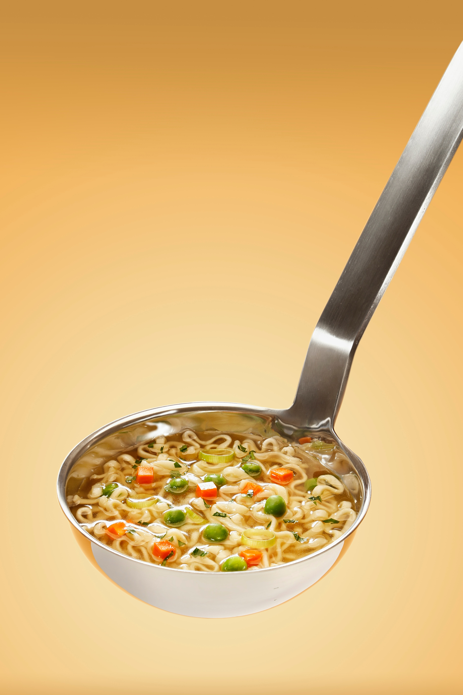

Soup Speedrun

What we want
An "as simple as it gets" soup which is very simple to prepare
Keep in mind that most ingredients like soup mix, greens or pasta are optional!
What we buy
- Unions
- Meat
- Carrots
- Soup mix
- Laurel leafs
- Potatoes
- Salt
- Pasta
- Greens
What we do
- Cut your meat and put in a pan
- Fill your pan to the top with water and put it on a stove
- Turn the stove to maximum, we're speedrunning
- Watch out for scum, you don't want it all over your stove
- Start cutting union, carrots (though you can buy it already cut) and peeling the potatoes while we wait for the water to boil
- Once the water boiled up, add onion and carrot
- 30 minutes later, add your soup mix (you can buy any you prefer)
- 10 minutes later, add 4 laurel leafs and a tablespoon of salt
- 30 minutes later, add pasta and greens
- GG. Now you can start optimizing this route (e.g. you can skip waiting time of step 7). Current WR is 60 minutes